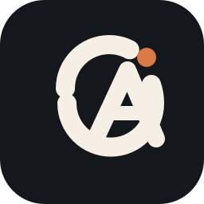
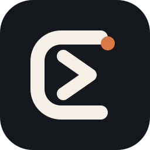
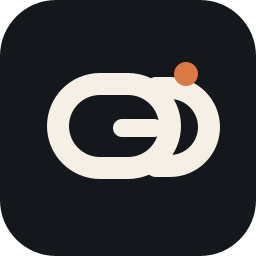
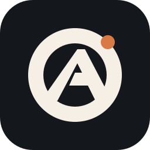

These concepts aim for the same territory as Linear, Raycast, and Vercel: geometric,
confident, favicon-safe, and clearly built for a developer product instead of a generic AI app.

Loop Monogram
Open orbit + sharp A construction
Closest to premium app icon territory
This is the cleanest balance between abstract product icon and readable monogram. It keeps
some motion, but the silhouette is still compact enough for favicon use.
22 px favicon
README lockup base

Prompt Gate
Terminal cue without going full command-line
Most explicitly developer-tooling
This direction is built around a framed prompt gesture. It is the easiest one to connect to
agent runtime, tools, and operator workflows without looking like a chatbot logo.
22 px favicon
Docs nav icon

Linked Orbit
Collaboration, routing, and multi-agent structure
Best fit if orchestration is central
This one leans into connection and handoff. It feels a little softer than the others, but it
gives you a believable system mark if you want to emphasize subagents or tool chains.
22 px favicon
Product symbol

Solid Aperture
Dense, geometric, infrastructure-grade silhouette
Most Vercel-like in confidence
This direction is the most minimal and the most severe. It trades some personality for a
stronger black-and-white silhouette, which is useful if you want the brand to feel more
foundational than expressive.
22 px favicon
Repo header icon